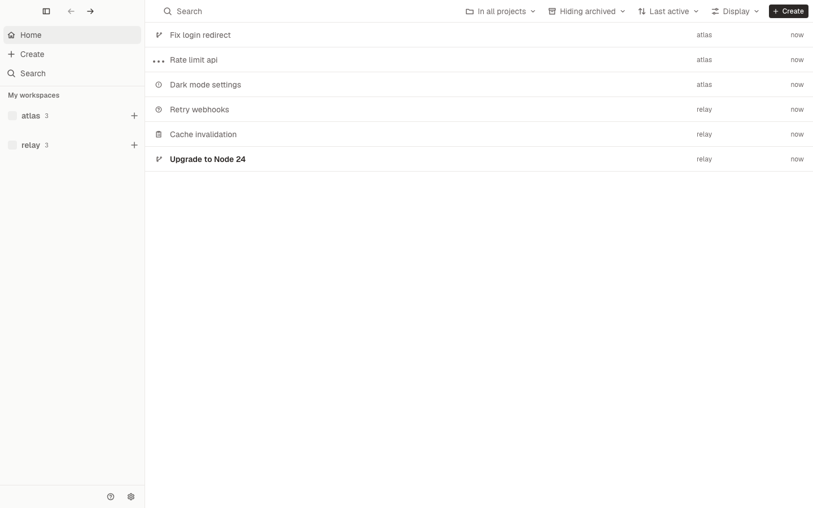
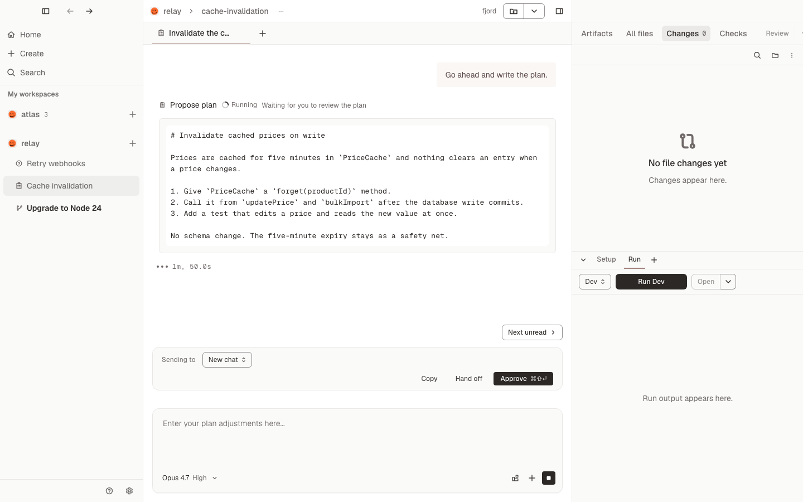
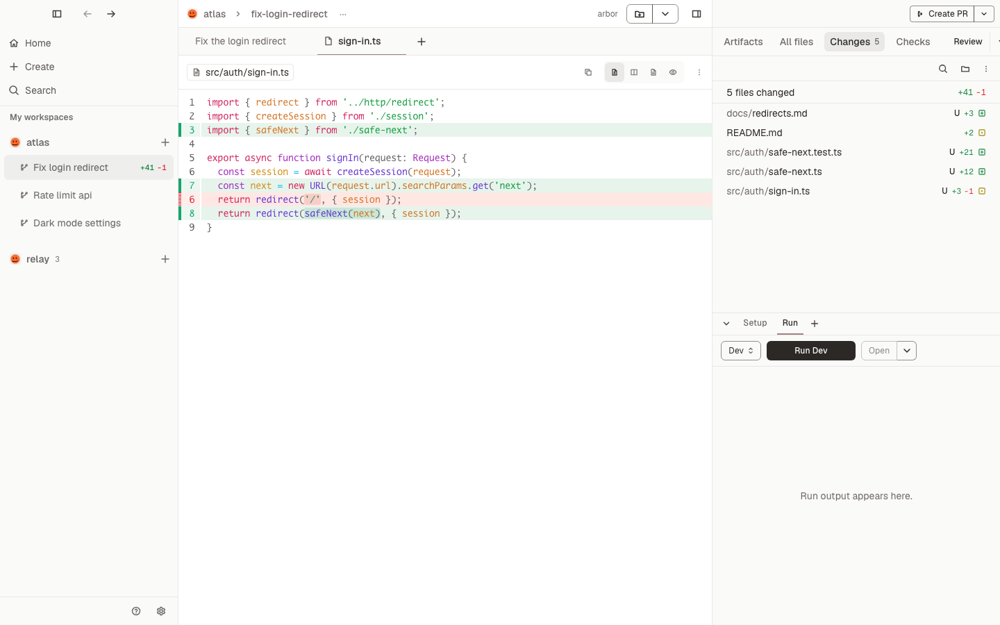
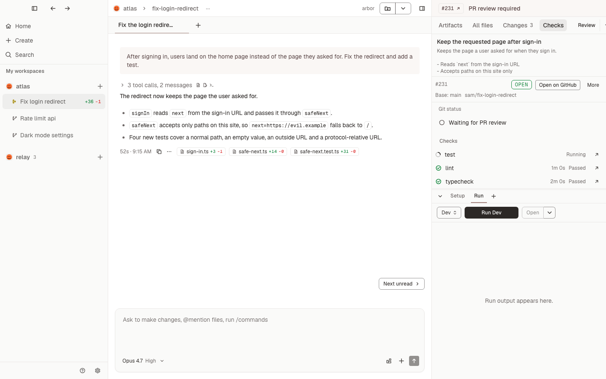
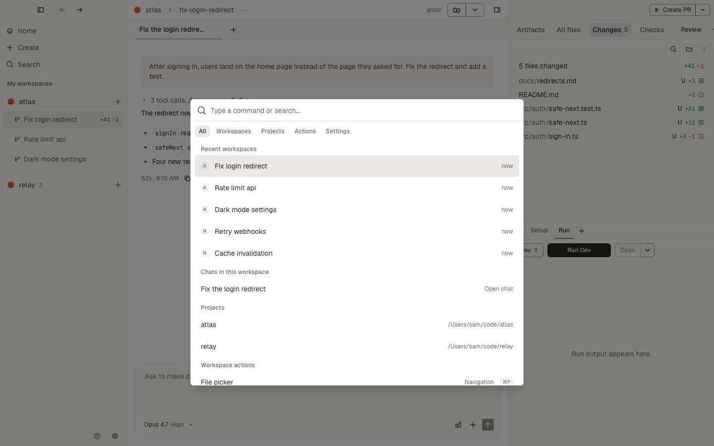

Drives the agents you already use
- Claude Code
- Codex
- Cursor
- OpenCode
- Pi
One worktree per task.
Each workspace is a git worktree on its own branch, with its own port, setup script and copied files. Many agents can change one repository at once without touching each other's work.

Steer the agent while it works.
Queue your next message, or steer the turn that is running. When the agent asks a question, proposes a plan or wants to run a command, it shows up as a card in the chat, ready for your answer.

Review every turn.
Read the diff by branch, by commit or by turn. Comment on a line and send your comments to the agent. Every turn is saved as a snapshot, so you can revert to it or fork the chat from there.

From diff to merged pull request.
Create the pull request, watch its checks, send failing checks back to the agent, and merge, all from the same panel. Stacked pull requests and Linear issues work there too.

Everything from the keyboard.
The command palette reaches every workspace, chat, project and action. Every command has a shortcut, and you can change any of them.

Your agents, your accounts.
Conducted has no account and no server of its own. Everything runs on your Mac.
Bring your own subscriptions and keys
Each agent signs in with your own subscription or API key. Conducted downloads the official agent programs, checks them and keeps them up to date. Your code goes only to the agent you chose.
Follow a chat from anywhere
Open any Claude chat in claude.ai/code or the Claude app. Read along, answer approvals and send follow-ups while the agent keeps working on your Mac.
How it works
-
Create a workspace
Pick a repository and describe the task, or start from a branch, a pull request or an issue.
-
Work with the agent
Chat with any of the five agents, in as many chats as the task needs.
-
Review the change
Read the diff, run your dev server or tests, and send comments back to the agent.
-
Ship it
Open the pull request, fix failing checks and merge. Archive the workspace when you are done.
Download Conducted
Free and open source, for macOS on Apple silicon.
- MacmacOS on Apple silicon
- AgentsA subscription or API key for at least one of the five agents
-
GitHubFor pull requests, a GitHub sign-in through
ghor a personal access token. Conducted installsghfor you.
Changelog
View all releases →An independent rebuild
Conducted rebuilds the local features of Conductor, a commercial app made by another team, from how it behaves. Its code, text and images are its own. It is not affiliated with Conductor or its makers. It is free and open source under the MIT licence.
Read the licence →